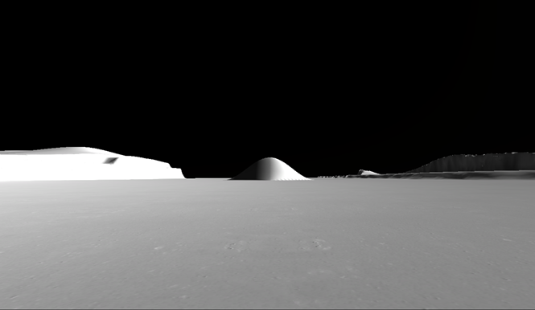
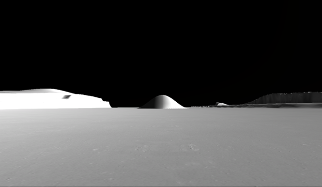

Lab Team
Cynthia Fioriti
Cynthia Fioriti is a Junior undergraduate student pursuing a B.S. in Psychological & Brain Science with minors in Neuroscience and Computer Science. She currently works at Veterans Affairs Medical Center in the Polytrauma/TBI System of Care. This is her fifth semester working in CUA's on campus laboratories.
Andronikki Gerohristoduolos
Andronikki Gerohristoduolos is a junior at the Catholic University of America. She is currently in the process of getting a B.S. in Brain and Psychological Science. Having seen how both mental and physical illness have affected members of her own family, she has chosen to major in Psychology before attending nursing school after graduation.
Matthew Incao
Matthew Incao is a junior B.S. of Psychology major with a minor in Business Management. He is originally from Bridgewater, New Jersey. Along with his involvement in the Lunar Psychophysics lab, he is also apart of Dr. Jobe’s Suicide Prevention lab. In the lab, he worked on a team that focused on Klonsky’s 3-step Theory Framework. Along with his interest in researching suicide, he also has interests in teams, perception, and resilience. In the future, he plans on pursuing an I/O graduate program. When he is not glued to a computer screen, he spends his time volunteering, listening to music, and hanging out with friends and family.
Rebecca Johnson
Rebecca Johnson is working towards her Bachelor of Arts degree in Psychology and is minoring in Social Work and History. Rebecca is from Leonardtown, MD.
Patrick Miller
Patrick Miller is a senior finishing up his Bachelor of Science in Psychological and Brain Sciences. After graduation plans on doing a year or two of lab research before pursuing a doctoral degree. In addition to the lunar psychophysics lab, he has done research into utilizing virtual reality software as a form of exposure therapy in individuals with anxiety disorders.

Colleen Yeckley
Colleen Yeckley is a sophomore Psychological Brain Science major from Medford, NJ. Science has always been something she has been interested in, so she is incredibly grateful to be given the opportunity to be a part of the Lunar Psychophysics lab here at CUA. As a child, Colleen imagined what it would be like to be an astronaut in space. Although she might not quite be there, she does get to see what it is like from an astronauts perspective! There aren't many fields or experiments quite like this one that use a virtual reality of the moon to simulate an astronauts view of their surroundings, so it is certainly an experience!
Kathleen Palmer
Kathleen Palmer is a senior at The Catholic University of America. She is in the process of receiving a Bachelor of Arts degree in Psychology. Kathleen is interested in conducting research and is greatly looking forward to working with Katt Rahill and learning more about Lunar Psychophysics. Upon graduation, she intends to pursue a career in criminal justice as a local or federal law enforcement agent. In her free time, Kathleen enjoys reading, music, and spending times with friends and family.
Mary Funk
Mary Funk is a senior pursuing a degree in Psychological and Brain Sciences and plans to pursue a degree in nursing post graduation. She is thrilled to have the amazing opportunity to work as a research assistant in the Lunar Psychophysics Virtual Reality Lab and to become more knowledgeable about the various components of perception in relation to space exploration. Mary enjoys volunteering at Children`s National Medical Center, working with autistic children, and is an athlete on the CUA track and cross country team.
Peter Varga
Peter Varga is a senior Psychology major pursuing minors in Neuroscience, Philosophy, and Theology & Religious Studies. He currently works as an Undergraduate Tutor in the University Writing Center where he is conducting research on the affective successes of clinical writing consultations. He is also the Head Copyeditor and Citations Editor for Inventio: The Undergraduate Research Journal of Catholic University. In addition to the Lunar Psychophysics Lab, Peter is a research assistant in the Mental Load & Performance Laboratory and for the Global Research on the Aesthetic Dimensions of Science project.
Deanna Busog
Deanna Busog is a senior undergraduate student pursuing a B.S. in Biomedical Engineering. She is currently a member on both the Student Philanthropy Council and the Biomedical Engineering Society at CUA. She is interested in Human Factors Engineering and its application in healthcare technology. She is incredibly excited to learn about the human factors aspect in this lab, and more about psychophysics.
Ian Adoremos
Ian Adoremos is a Freshman undergraduate. He is pursuing a Bachelor of Science degree in Psychological and Brain Sciences. He aspires to graduate into a doctoral program concentrated in Cognitive Neuroscience. He likes reading books that range from physics, linguistics, and cognitive science. In his spare time, he enjoys cooking, hiking, exercising, and spending time with his family.
Lizzie Reid
Lizzie Reid is a sophomore psychology and brain sciences major from Berwyn PA. She is so glad to be a part of the lunar lab because the moon has always fascinated her. She looks forward to being able to help discover new ways to help astronauts and learn about VR technology.
 
